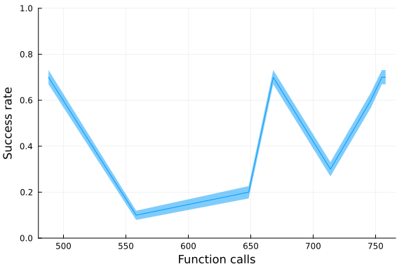
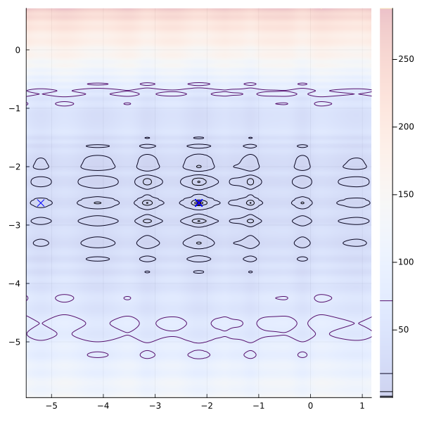
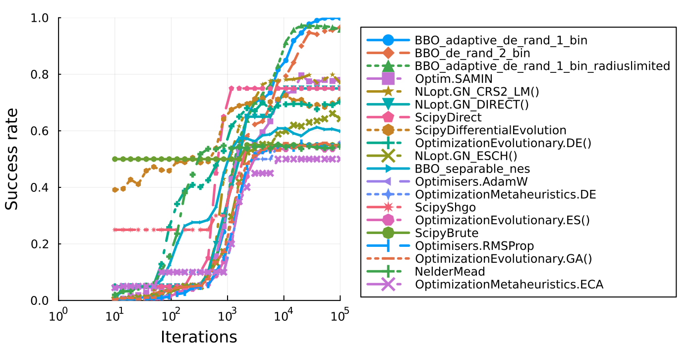
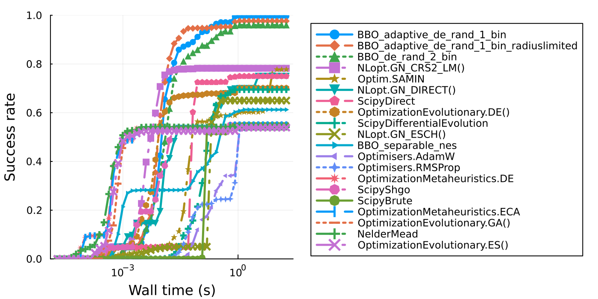
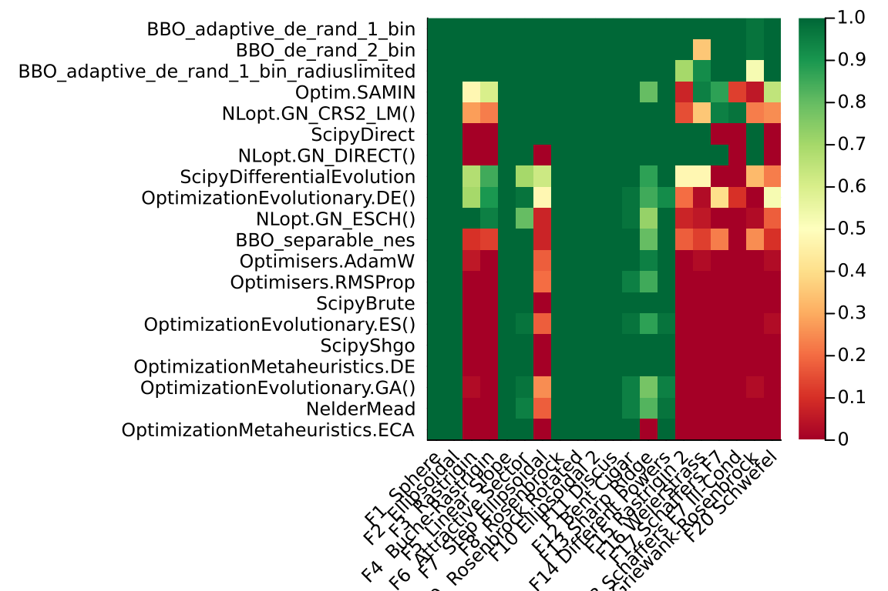
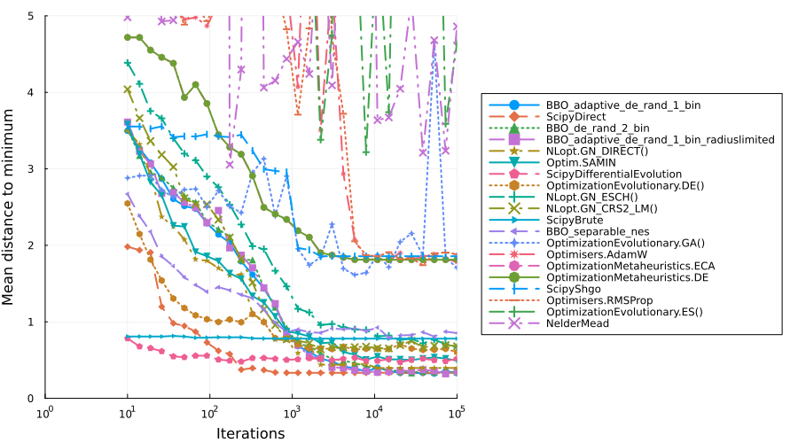
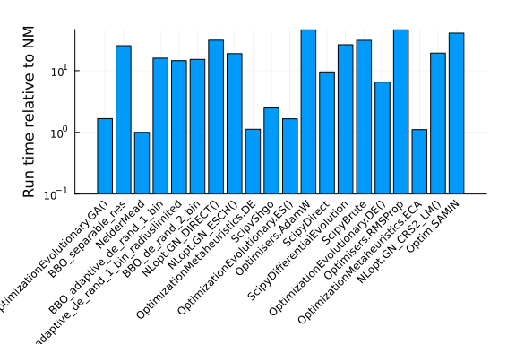

Black-Box Global Optimizer Benchmarks
In this benchmark we will run the BlackboxGlobalOptimization.jl benchmarks, a set of global optimization benchmarks on the Optimization.jl interface that test a wide variety of behaviors. This tests both iterations and wall-clock time vs accuracy, i.e. for a given budget (in iterations or time), what percentage of problems from the set is a solver able to solve. This gives a global view of which methods are the most efficient at finding difficult global optima.
Setup
using BlackBoxOptimizationBenchmarking, Plots, Optimization, Memoize, Statistics
import BlackBoxOptimizationBenchmarking: Chain, BenchmarkSetup, BenchmarkResults,
BBOBFunction, FunctionCallsCounter, solve_problem, pinit, compute_CI
const BBOB = BlackBoxOptimizationBenchmarking
using OptimizationBBO, OptimizationOptimJL, OptimizationEvolutionary, OptimizationNLopt
using OptimizationMetaheuristics, OptimizationNOMAD, OptimizationPRIMA, OptimizationOptimisers, OptimizationSciPy, OptimizationPyCMAWe define a time-to-success benchmarking framework. For each (optimizer, function, trial), we run the optimizer once with a large iteration budget and wrap the objective function to detect the first evaluation that achieves the success criterion. The wall-clock time at that moment is recorded as the "time to success". From these times we build a CDF: for a given wall-time budget T, what fraction of (function, trial) pairs were solved?
function make_success_tracker(f_raw, f_opt, Δf)
t0 = Ref(time())
time_to_success = Ref(Inf)
function tracked_f(u)
val = f_raw(u)
if val < Δf + f_opt && time_to_success[] == Inf
time_to_success[] = time() - t0[]
end
return val
end
return tracked_f, t0, time_to_success
end
function solve_problem_timed(optimizer::BenchmarkSetup, tracked_f, D::Int, run_length::Int;
u0 = pinit(D))
method = optimizer.method
optf = OptimizationFunction((u, _) -> tracked_f(u), AutoForwardDiff())
if optimizer.isboxed
prob = OptimizationProblem(optf, u0, lb = fill(-5.5, D), ub = fill(5.5, D))
else
prob = OptimizationProblem(optf, u0)
end
sol = Optimization.solve(prob, method; maxiters = run_length)
sol
end
function solve_problem_timed(m::Chain, tracked_f, D::Int, run_length::Int)
rl1 = round(Int, m.p * run_length)
rl2 = run_length - rl1
sol = solve_problem_timed(m.first, tracked_f, D, rl1)
xinit = sol.u
sol = solve_problem_timed(m.second, tracked_f, D, rl2; u0 = xinit)
end
function benchmark_time_to_success(
optimizer::Union{Chain, BenchmarkSetup}, f::BBOBFunction;
Ntrials::Int = 20, dimension::Int = 3, Δf::Real = 1e-6, max_run_length::Int = 100_000
)
times = Float64[]
for i in 1:Ntrials
tracked_f, t0_ref, tts_ref = make_success_tracker(f.f, f.f_opt, Δf)
try
t0_ref[] = time()
sol = solve_problem_timed(optimizer, tracked_f, dimension, max_run_length)
push!(times, tts_ref[])
catch err
push!(times, Inf)
@warn(string(optimizer, " failed: ", err))
end
end
return times
end
benchmark_time_to_success(optimizer, f; kwargs...) =
benchmark_time_to_success(BenchmarkSetup(optimizer), f; kwargs...)
function benchmark_time_to_success(
optimizer::Union{Chain, BenchmarkSetup}, funcs::Vector{BBOBFunction};
Ntrials::Int = 20, dimension::Int = 3, Δf::Real = 1e-6, max_run_length::Int = 100_000
)
all_times = Float64[]
for f in funcs
append!(all_times, benchmark_time_to_success(
optimizer, f; Ntrials, dimension, Δf, max_run_length))
end
return all_times
end
benchmark_time_to_success(optimizer, funcs::Vector{BBOBFunction}; kwargs...) =
benchmark_time_to_success(BenchmarkSetup(optimizer), funcs; kwargs...)
function success_rate_cdf(all_times::Vector{Float64}, time_thresholds::AbstractVector{Float64})
N = length(all_times)
return [count(x -> x <= t, all_times) / N for t in time_thresholds]
endsuccess_rate_cdf (generic function with 1 method)chain = (t;
isboxed = false) -> Chain(
BenchmarkSetup(t, isboxed = isboxed),
BenchmarkSetup(NelderMead(), isboxed = false),
0.9
)
test_functions = BBOB.list_functions()
dimension = 3
run_length = round.(Int, 10 .^ LinRange(1, 5, 30))
@memoize run_bench(algo) = BBOB.benchmark(
setup[algo], test_functions, run_length, Ntrials = 40, dimension = dimension)
@memoize run_tts(algo) = benchmark_time_to_success(
setup[algo], test_functions, Ntrials = 40, dimension = dimension)run_tts (generic function with 1 method)setup = Dict(
"NelderMead" => NelderMead(),
#Optim.BFGS(),
#"NLopt.GN_MLSL_LDS" => chain(NLopt.GN_MLSL_LDS(), isboxed=true), # gives me errors
"NLopt.GN_CRS2_LM()" => chain(NLopt.GN_CRS2_LM(), isboxed = true),
"NLopt.GN_DIRECT()" => chain(NLopt.GN_DIRECT(), isboxed = true),
"NLopt.GN_ESCH()" => chain(NLopt.GN_ESCH(), isboxed = true),
"OptimizationEvolutionary.GA()" => chain(OptimizationEvolutionary.GA(), isboxed = true),
"OptimizationEvolutionary.DE()" => chain(OptimizationEvolutionary.DE(), isboxed = true),
"OptimizationEvolutionary.ES()" => chain(OptimizationEvolutionary.ES(), isboxed = true),
"Optim.SAMIN" => chain(SAMIN(verbosity = 0), isboxed = true),
"BBO_adaptive_de_rand_1_bin" => chain(BBO_adaptive_de_rand_1_bin(), isboxed = true),
"BBO_adaptive_de_rand_1_bin_radiuslimited" => chain(
BBO_adaptive_de_rand_1_bin_radiuslimited(), isboxed = true), # same as BBO_adaptive_de_rand_1_bin
"BBO_separable_nes" => chain(BBO_separable_nes(), isboxed = true),
"BBO_de_rand_2_bin" => chain(BBO_de_rand_2_bin(), isboxed = true),
#"BBO_xnes" => chain(BBO_xnes(), isboxed=true), # good but slow
#"BBO_dxnes" => chain(BBO_dxnes(), isboxed=true),
"OptimizationMetaheuristics.ECA" => chain(OptimizationMetaheuristics.ECA(), isboxed = true),
#"OptimizationMetaheuristics.CGSA" => () -> chain(OptimizationMetaheuristics.CGSA(), isboxed=true), #give me strange results
"OptimizationMetaheuristics.DE" => chain(OptimizationMetaheuristics.DE(), isboxed=true),
"Optimisers.AdamW" => chain(Optimisers.AdamW(), isboxed=false),
"Optimisers.RMSProp" => chain(Optimisers.RMSProp(), isboxed=false),
# SciPy global optimizers
"ScipyDifferentialEvolution" => chain(ScipyDifferentialEvolution(), isboxed=true),
#"ScipyBasinhopping" => chain(ScipyBasinhopping(), isboxed=true),
#"ScipyDualAnnealing" => chain(ScipyDualAnnealing(), isboxed=true), # taking long time
"ScipyShgo" => chain(ScipyShgo(), isboxed=true),
"ScipyDirect" => chain(ScipyDirect(), isboxed=true),
"ScipyBrute" => chain(ScipyBrute(), isboxed=true),
# "NOMADOpt" => chain(NOMADOpt()), too much printing
# "OptimizationPRIMA.UOBYQA()" => chain(OptimizationPRIMA.UOBYQA()), :StackOverflowError?
# "OptimizationPRIMA.NEWUOA()" => OptimizationPRIMA.UOBYQA(),
#
)Dict{String, Any} with 20 entries:
"OptimizationEvolutionar… => Chain(GA → NelderMead)…
"BBO_separable_nes" => Chain(BBO_separable_nes → NelderMead)…
"NelderMead" => NelderMead{AffineSimplexer, AdaptiveParamete
rs}(…
"BBO_adaptive_de_rand_1_… => Chain(BBO_adaptive_de_rand_1_bin → NelderMea
d)…
"BBO_adaptive_de_rand_1_… => Chain(BBO_adaptive_de_rand_1_bin_radiuslimit
ed →…
"BBO_de_rand_2_bin" => Chain(BBO_de_rand_2_bin → NelderMead)…
"NLopt.GN_DIRECT()" => Chain(Algorithm → NelderMead)…
"NLopt.GN_ESCH()" => Chain(Algorithm → NelderMead)…
"OptimizationMetaheurist… => Chain(Algorithm → NelderMead)…
"ScipyShgo" => Chain(ScipyShgo → NelderMead)…
"OptimizationEvolutionar… => Chain(ES → NelderMead)…
"Optimisers.AdamW" => Chain(AdamW → NelderMead)…
"ScipyDirect" => Chain(ScipyDirect → NelderMead)…
"ScipyDifferentialEvolut… => Chain(ScipyDifferentialEvolution → NelderMea
d)…
"ScipyBrute" => Chain(ScipyBrute → NelderMead)…
"OptimizationEvolutionar… => Chain(DE → NelderMead)…
"Optimisers.RMSProp" => Chain(RMSProp → NelderMead)…
"OptimizationMetaheurist… => Chain(Algorithm → NelderMead)…
"NLopt.GN_CRS2_LM()" => Chain(Algorithm → NelderMead)…
"Optim.SAMIN" => Chain(SAMIN → NelderMead)…Test one optimizer
@time b = BBOB.benchmark(
chain(OptimizationMetaheuristics.CGSA(), isboxed = true),
test_functions[1:10], 100:500:10_000, Ntrials = 10, dimension = 3
)
plot(b)21.920825 seconds (143.92 M allocations: 6.882 GiB, 11.14% gc time, 59.44%
compilation time: 14% of which was recompilation)
Test one test function (Rastrigin)
Δf = 1e-6
f = test_functions[3]
single_setup = BenchmarkSetup(NLopt.GN_CRS2_LM(), isboxed = true)
sol = [BBOB.solve_problem(single_setup, f, 3, 5_000) for in in 1:10]
@info [sol.objective < Δf + f.f_opt for sol in sol]
p = plot(f, size = (600, 600), zoom = 1.5)
for sol in sol
scatter!(sol.u[1:1], sol.u[2:2], label = "", c = "blue",
marker = :xcross, markersize = 5, markerstrokewidth = 0)
end
p
Test all (iterations)
results = Array{BBOB.BenchmarkResults}(undef, length(setup))
algorithms = collect(keys(setup))
Threads.@threads for i in eachindex(algorithms)
algo = algorithms[i]
if !startswith(algo, "Scipy")
results[i] = run_bench(algo)
end
end
# PythonCall can segfault when these SciPy solves run on different Julia threads.
for (i, algo) in enumerate(algorithms)
if startswith(algo, "Scipy")
results[i] = run_bench(algo)
end
end
results20-element Vector{BlackBoxOptimizationBenchmarking.BenchmarkResults}:
BenchmarkResults :
Run length : [10, 14, 19, 26, 36, 49, 67, 92, 127, 174 … 5736, 7880, 1082
6, 14874, 20434, 28072, 38566, 52983, 72790, 100000]
Success rate : [0.00625, 0.0025, 0.005, 0.01, 0.015, 0.01375, 0.0325, 0.025
, 0.03625, 0.04625 … 0.51125, 0.50375, 0.53625, 0.5375, 0.53375, 0.5475,
0.53375, 0.54125, 0.5375, 0.54]
BenchmarkResults :
Run length : [10, 14, 19, 26, 36, 49, 67, 92, 127, 174 … 5736, 7880, 1082
6, 14874, 20434, 28072, 38566, 52983, 72790, 100000]
Success rate : [0.015, 0.025, 0.0375, 0.04375, 0.05, 0.0575, 0.085, 0.12, 0
.22, 0.29375 … 0.61, 0.635, 0.65875, 0.6625, 0.64625, 0.65625, 0.6525, 0.
63, 0.645, 0.62375]
BenchmarkResults :
Run length : [10, 14, 19, 26, 36, 49, 67, 92, 127, 174 … 5736, 7880, 1082
6, 14874, 20434, 28072, 38566, 52983, 72790, 100000]
Success rate : [0.0125, 0.02875, 0.03625, 0.04625, 0.04625, 0.05625, 0.1, 0
.14375, 0.23875, 0.37 … 0.5375, 0.535, 0.53625, 0.53875, 0.5375, 0.54375,
0.53875, 0.54, 0.54, 0.535]
BenchmarkResults :
Run length : [10, 14, 19, 26, 36, 49, 67, 92, 127, 174 … 5736, 7880, 1082
6, 14874, 20434, 28072, 38566, 52983, 72790, 100000]
Success rate : [0.00375, 0.005, 0.00875, 0.00625, 0.0175, 0.02, 0.03125, 0.
0375, 0.045, 0.05125 … 0.85125, 0.92125, 0.9275, 0.93375, 0.9575, 0.98875
, 0.99375, 0.9975, 1.0, 0.9975]
BenchmarkResults :
Run length : [10, 14, 19, 26, 36, 49, 67, 92, 127, 174 … 5736, 7880, 1082
6, 14874, 20434, 28072, 38566, 52983, 72790, 100000]
Success rate : [0.00125, 0.00375, 0.00625, 0.0075, 0.01, 0.01625, 0.02375,
0.03625, 0.03875, 0.04875 … 0.8725, 0.93875, 0.95375, 0.96875, 0.975, 0.9
7125, 0.9725, 0.9775, 0.9775, 0.97]
BenchmarkResults :
Run length : [10, 14, 19, 26, 36, 49, 67, 92, 127, 174 … 5736, 7880, 1082
6, 14874, 20434, 28072, 38566, 52983, 72790, 100000]
Success rate : [0.00125, 0.00875, 0.00625, 0.01125, 0.0175, 0.015, 0.03, 0.
04, 0.04875, 0.04875 … 0.77125, 0.855, 0.89625, 0.92, 0.93625, 0.93875, 0
.945, 0.96, 0.96375, 0.96875]
BenchmarkResults :
Run length : [10, 14, 19, 26, 36, 49, 67, 92, 127, 174 … 5736, 7880, 1082
6, 14874, 20434, 28072, 38566, 52983, 72790, 100000]
Success rate : [0.0, 0.05, 0.05, 0.05, 0.05, 0.05, 0.05, 0.05, 0.05, 0.1 …
0.8, 0.8, 0.8, 0.8, 0.8, 0.8, 0.8, 0.8, 0.8, 0.8]
BenchmarkResults :
Run length : [10, 14, 19, 26, 36, 49, 67, 92, 127, 174 … 5736, 7880, 1082
6, 14874, 20434, 28072, 38566, 52983, 72790, 100000]
Success rate : [0.00125, 0.00125, 0.00375, 0.00375, 0.00625, 0.0125, 0.0262
5, 0.02375, 0.04125, 0.05 … 0.555, 0.56375, 0.62375, 0.62125, 0.6425, 0.6
4875, 0.6625, 0.63875, 0.6425, 0.6525]
BenchmarkResults :
Run length : [10, 14, 19, 26, 36, 49, 67, 92, 127, 174 … 5736, 7880, 1082
6, 14874, 20434, 28072, 38566, 52983, 72790, 100000]
Success rate : [0.04125, 0.05, 0.05, 0.05, 0.05, 0.05, 0.05, 0.05, 0.05, 0.
1 … 0.5, 0.5, 0.55, 0.55, 0.55, 0.55, 0.55, 0.55, 0.55, 0.55]
BenchmarkResults :
Run length : [10, 14, 19, 26, 36, 49, 67, 92, 127, 174 … 5736, 7880, 1082
6, 14874, 20434, 28072, 38566, 52983, 72790, 100000]
Success rate : [0.3, 0.3, 0.3, 0.3, 0.3, 0.3, 0.3, 0.3, 0.3, 0.3 … 0.5, 0
.5, 0.55, 0.55, 0.55, 0.55, 0.55, 0.55, 0.55, 0.55]
BenchmarkResults :
Run length : [10, 14, 19, 26, 36, 49, 67, 92, 127, 174 … 5736, 7880, 1082
6, 14874, 20434, 28072, 38566, 52983, 72790, 100000]
Success rate : [0.0, 0.0, 0.0, 0.0, 0.00375, 0.0025, 0.01125, 0.01625, 0.02
5, 0.04 … 0.50125, 0.50875, 0.52, 0.54125, 0.53875, 0.53375, 0.535, 0.531
25, 0.535, 0.535]
BenchmarkResults :
Run length : [10, 14, 19, 26, 36, 49, 67, 92, 127, 174 … 5736, 7880, 1082
6, 14874, 20434, 28072, 38566, 52983, 72790, 100000]
Success rate : [0.0, 0.0, 0.0, 0.0, 0.005, 0.00375, 0.0075, 0.0125, 0.03125
, 0.03625 … 0.50375, 0.51875, 0.53125, 0.50625, 0.47125, 0.44125, 0.445,
0.445, 0.44125, 0.44375]
BenchmarkResults :
Run length : [10, 14, 19, 26, 36, 49, 67, 92, 127, 174 … 5736, 7880, 1082
6, 14874, 20434, 28072, 38566, 52983, 72790, 100000]
Success rate : [0.05, 0.05, 0.05, 0.05, 0.05, 0.05, 0.1, 0.1, 0.1, 0.1 …
0.75, 0.75, 0.75, 0.75, 0.75, 0.75, 0.75, 0.75, 0.75, 0.75]
BenchmarkResults :
Run length : [10, 14, 19, 26, 36, 49, 67, 92, 127, 174 … 5736, 7880, 1082
6, 14874, 20434, 28072, 38566, 52983, 72790, 100000]
Success rate : [0.35125, 0.37625, 0.37875, 0.38375, 0.40625, 0.40625, 0.435
, 0.43, 0.4375, 0.4325 … 0.70875, 0.715, 0.7125, 0.69625, 0.70625, 0.7012
5, 0.71, 0.6975, 0.69875, 0.72125]
BenchmarkResults :
Run length : [10, 14, 19, 26, 36, 49, 67, 92, 127, 174 … 5736, 7880, 1082
6, 14874, 20434, 28072, 38566, 52983, 72790, 100000]
Success rate : [0.5, 0.5, 0.5, 0.5, 0.5, 0.5, 0.5, 0.5, 0.5, 0.5 … 0.6, 0
.6, 0.6, 0.6, 0.6, 0.6, 0.6, 0.6, 0.6, 0.6]
BenchmarkResults :
Run length : [10, 14, 19, 26, 36, 49, 67, 92, 127, 174 … 5736, 7880, 1082
6, 14874, 20434, 28072, 38566, 52983, 72790, 100000]
Success rate : [0.05, 0.05, 0.05, 0.05, 0.0575, 0.08125, 0.13875, 0.27875,
0.37, 0.415 … 0.745, 0.74625, 0.74125, 0.74625, 0.7475, 0.755, 0.73875, 0
.7425, 0.755, 0.73125]
BenchmarkResults :
Run length : [10, 14, 19, 26, 36, 49, 67, 92, 127, 174 … 5736, 7880, 1082
6, 14874, 20434, 28072, 38566, 52983, 72790, 100000]
Success rate : [0.0, 0.0, 0.0, 0.0, 0.00625, 0.0025, 0.01375, 0.02125, 0.02
375, 0.0425 … 0.44625, 0.48125, 0.4975, 0.4875, 0.485, 0.495, 0.49625, 0.
4975, 0.48, 0.4925]
BenchmarkResults :
Run length : [10, 14, 19, 26, 36, 49, 67, 92, 127, 174 … 5736, 7880, 1082
6, 14874, 20434, 28072, 38566, 52983, 72790, 100000]
Success rate : [0.04375, 0.05, 0.05, 0.05, 0.05, 0.05, 0.05, 0.05, 0.05, 0.
1 … 0.5, 0.5, 0.55, 0.55, 0.55, 0.55, 0.55, 0.55, 0.55, 0.55]
BenchmarkResults :
Run length : [10, 14, 19, 26, 36, 49, 67, 92, 127, 174 … 5736, 7880, 1082
6, 14874, 20434, 28072, 38566, 52983, 72790, 100000]
Success rate : [0.00125, 0.00125, 0.00375, 0.00125, 0.01, 0.04125, 0.0475,
0.04875, 0.05, 0.05 … 0.77125, 0.7875, 0.795, 0.7925, 0.79125, 0.7925, 0.
7875, 0.8, 0.7925, 0.795]
BenchmarkResults :
Run length : [10, 14, 19, 26, 36, 49, 67, 92, 127, 174 … 5736, 7880, 1082
6, 14874, 20434, 28072, 38566, 52983, 72790, 100000]
Success rate : [0.005, 0.0075, 0.01125, 0.0175, 0.035, 0.0425, 0.04875, 0.0
4875, 0.0525, 0.05125 … 0.63875, 0.75625, 0.805, 0.79875, 0.8125, 0.82625
, 0.825, 0.815, 0.78625, 0.82375]Success Rate vs. Iterations
# Define marker shapes and line styles for accessibility (colorblind-friendly)
const MARKERS = [:circle, :diamond, :utriangle, :square, :star5, :dtriangle, :pentagon,
:hexagon, :cross, :xcross, :rtriangle, :ltriangle, :star4, :star8, :heptagon, :octagon,
:vline, :hline, :+, :x]
const LINESTYLES = [:solid, :dash, :dot, :dashdot, :dashdotdot]
labels = collect(keys(setup))
idx = sortperm([b.success_rate[end] for b in results], rev = true)
p = plot(xscale = :log10, legend = :outerright,
size = (700, 350), margin = 10Plots.px, dpi = 200)
for (j, i) in enumerate(idx)
plot!(results[i], label = labels[i], showribbon = false,
lw = 2.5, xlim = (1, 1e5), x = :run_length,
markershape = MARKERS[mod1(j, length(MARKERS))],
linestyle = LINESTYLES[mod1(j, length(LINESTYLES))],
markersize = 4, markerstrokewidth = 0)
end
p
Test all (wall-clock time to success)
For the time-based benchmark, each optimizer is run once with a large iteration budget (100,000 iterations) per (function, trial) pair. The objective function is wrapped to detect the first evaluation that achieves the success criterion (objective < Δf + f_opt) and record the wall-clock time at that moment. This gives a true "time to success" for each trial, from which we build a CDF.
tts_results = Dict{String, Vector{Float64}}()
for algo in keys(setup)
tts_results[algo] = run_tts(algo)
endSuccess Rate vs. Wall-Clock Time
This plot is the time-based analog of the iteration plot above. The x-axis is a wall-clock time budget; for each budget T, the y-axis shows what fraction of (function, trial) pairs the optimizer solved within T seconds. Unlike the iteration plot, this accounts for per-iteration cost differences between algorithms.
labels = collect(keys(setup))
# Determine time thresholds from data
all_finite = filter(isfinite, vcat(values(tts_results)...))
t_lo = minimum(all_finite) / 2
t_hi = maximum(all_finite) * 2
time_thresholds = 10 .^ range(log10(t_lo), log10(t_hi), length = 50)
cdfs = Dict(algo => success_rate_cdf(tts_results[algo], time_thresholds) for algo in labels)
idx = sortperm([cdfs[l][end] for l in labels], rev = true)
p = plot(xscale = :log10, legend = :outerright,
size = (700, 350), margin = 10Plots.px, dpi = 200,
xlabel = "Wall time (s)", ylabel = "Success rate", ylim = (0, 1))
for (j, i) in enumerate(idx)
plot!(time_thresholds, cdfs[labels[i]], label = labels[i], lw = 2.5,
markershape = MARKERS[mod1(j, length(MARKERS))],
linestyle = LINESTYLES[mod1(j, length(LINESTYLES))],
markersize = 4, markerstrokewidth = 0)
end
p
Success Rate per Function Heatmap
success_rate_per_function = reduce(hcat, b.success_rate_per_function for b in results)
idx = sortperm(mean(success_rate_per_function, dims = 1)[:], rev = false)
idxfunc = sortperm(mean(success_rate_per_function, dims = 2)[:], rev = true)
idxfunc = 1:length(test_functions)
p = heatmap(
string.(test_functions)[idxfunc], labels[idx], success_rate_per_function[idxfunc, idx]',
cmap = :RdYlGn,
xticks = :all,
yticks = :all,
xrotation = 45,
dpi = 200
)
Distance to Minimizer vs. Iterations
labels = collect(keys(setup))
idx = sortperm([b.distance_to_minimizer[end] for b in results], rev = false)
p = plot(xscale = :log10, legend = :outerright,
size = (900, 500), margin = 10Plots.px, ylim = (0, 5))
for (j, i) in enumerate(idx)
plot!(
results[i].run_length, results[i].distance_to_minimizer, label = labels[i],
showribbon = false, lw = 2, xlim = (1, 1e5),
xlabel = "Iterations", ylabel = "Mean distance to minimum",
markershape = MARKERS[mod1(j, length(MARKERS))],
linestyle = LINESTYLES[mod1(j, length(LINESTYLES))],
markersize = 4, markerstrokewidth = 0
)
end
p
Relative Runtime
ref = findfirst("NelderMead" .== labels)
runtimes = getfield.(results, :runtime)
runtimes = runtimes ./ runtimes[ref]
bar(
labels, runtimes, xrotation = :45, xticks = :all, ylabel = "Run time relative to NM",
yscale = :log10, yticks = [0.1, 1, 10, 100],
legend = false, margin = 25Plots.px
)